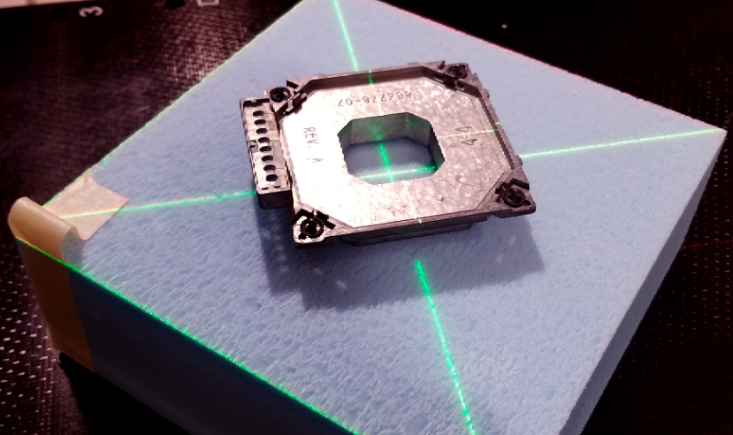

e- Blk w/TomoHDA & Ray6¶
2018_07_25
At Tomo¶
Pre-Start: cut & pour block, power up, run software, 5-min warmup, AIRSCANS
- Select Patient: ‘STEREOPHAN, IMAGING’ [ fine pitch, 1mm slices ]
Select slices -> Accept slices … Prepare scan -> OK -> Setup -> Yes
+/- cm scan
6x6 10x6 10x10 15x15 20x20 25x25 4 4 6 9 12 14
Setup electron block, green lasers at insert center-exit
Figure 1
- Main -> Ready -> Yes … Key -> Image -> Key -> check image for voids
Tools -> Clear selected patient -> Tools -> Dicom Options -> Export Items
- Export to: RaySearch … select correct ‘CTrue Image’ -> Send Now -> Close
At RayStation¶
Patient Data / Patient Information
- Import new patient -> [ ‘Storage SCP’, ‘STEREOPHAN, IMAGING’, ‘CT Series’]
- ‘Import’ -> if prompted, ‘Create a new patient’ then ‘OK’
- Edit patient data -> [Patient ID, First name, Last name] -> ‘OK’ -> ‘Yes’
- Image Sets / Properties -> confirm correct density table -> ‘OK’
Patient Modeling / Structure Definition / ROI Tools
Set Coronal view, all axes on block center -> Rt-click, Preset, Inner ear
- New ROI geometry / Create new ROI… [Name: aperture, Type:PTV] -> ‘OK’
Outline block opening w/Spline tool -> Set Transversal view
- New ROI geometry / Basic shapes / Create box ROI…
[ R-L/I-S/P-A = 10/10/5, Center: Geometric Center of ROI: aperture, Output / New ROI / Name: air_gap, Type: undefined] -> ‘OK’
- New ROI geometry / Basic shapes / Create box ROI…
[ R-L/I-S/P-A from below, Center: Geometric Center of ROI: aperture, Output / New ROI / Name: phantom, Type: undefined] -> ‘OK’
6x6 10x6 10x10 15x15 20x20 25x25 6E 8,8, 4 12,12, 4 12,12, 4 17,17, 4 22,22, 4 27,27, 4 9E 8,8, 6 12,12, 6 12,12, 6 17,17, 6 22,22, 6 27,27, 6 12E 8,8, 8 12,12, 8 12,12, 8 17,17, 8 22,22, 8 27,27, 8 16E 8,8,10 12,12,10 12,12,10 17,17,10 22,22,10 27,27,10 20E 8,8,12 12,12,12 12,12,12 17,17,12 22,22,12 27,27,12 Translate: ‘air_gap’ to bottom of block, ‘phantom’ to bottom of ‘air_gap’
Plan Design / Plan Setup
New plan+ -> Do you want to save the changes? -> ‘Yes’
[Name: Cutout, Planned by: you, Patient Treatment position: HFS, Modality: Electrons, Treatment Technique: Applicator and cutout, Treatment machine: Clinac-iXsn3694, Create setup beams: No, Dose prescription: 180 cGy x 1fx, ROI / phantom, Prescription type: Dose at volume%: 0, Auto scale:Yes] -> ‘OK’
Grid Settings
[ Resolution: 0.10, Use Uniform Resolution:Yes, Set default size ] -> OK In planning windows, Rt-click, Edit dose grid, adjust to include aperture
Beams / Add
[ Name: 01, Description: AP Electron, MeV: 6, Isocenter Name: SSD=100, Isocenter Location: “Center of ROI: phantom”, copy position, Angles:180/180/180, Applicator: Varian 6x6, Cutout name: cutout, Cerrobend, 1.7 cm] -> ‘OK’
Overwrite “SSD [cm] To surface” to 100
Setup Beams -> Delete, Delete, Delete (if present)
Plan Design / Electron Beam Design / Treat and Protect
Treat=aperture, Protect=’‘, Margins= 0,0,0,0 -> ‘Conform all beams’ Settings / Number of histories per cm2 = 1,000,000 -> ‘OK’
Final dose -> long wait ->

Figure 2
Ctrl-P -> ‘Yes’, ‘Yes’, ‘Yes’ -> Template: ‘Electron - Clinical Sim’

Figure 3